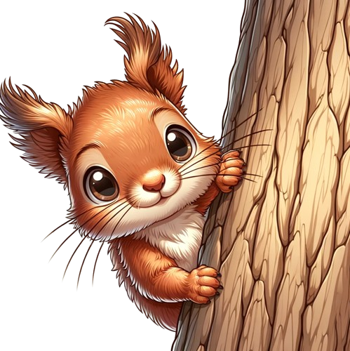

<!DOCTYPE html>
<html lang="cs">
  <head>
    <meta charset="UTF-8" />
    <meta name="viewport" content="width=device-width, initial-scale=1.0" />
    <link rel="stylesheet" href="../style.css" />
    <link rel="stylesheet" href="about.css" />
    <link rel="stylesheet" href="../menu.css" />
    <script type="module" src="about.js"></script>
    <script type="module" src="../script.js"></script>
    <link rel="preconnect" href="https://fonts.googleapis.com" />
    <link rel="preconnect" href="https://fonts.gstatic.com" crossorigin />
    <link
      href="https://fonts.googleapis.com/css2?family=Forum&family=Original+Surfer&display=swap"
      rel="stylesheet"
    />
    <title>Nerozhodná veverka</title>
  </head>
</html>
<body>
  <div class="main">
    <div class="header">
      <a href="../index.html"> <div class="logo"></div> </a>
      <div class="menu">
        <div class="menu_item">
          <div class="nut"></div>
          <a class="menu_HomePage" href="../index.html">Domů</a>
        </div>
        <div class="menu_item">
          <div class="nut"></div>
          <a class="menu_aboutGame" href="../about-game/game.html">O hře</a>
        </div>
        <div class="menu_item">
          <div class="nut"></div>
          <a class="menu_aboutUs" href="./about.html">O nás</a>
        </div>
      </div>
      <div class="hamburger-menu">
        <div class="line"></div>
        <div class="line"></div>
        <div class="line"></div>
        <div class="line"></div>
      </div>
    </div>
    <div class="nadpis">
      <h1>Nerozhodná veverka</h1>
    </div>
    <div class="text">
      <div class="main_content">
        <h3>O nás</h3>
        <p>
          Jsme 3 poblázněné super holky jménem Bára, Táňa a Jana. I přesto, že
          naše cesty byly rozdílné, přivedly nás ke společné zálibě –
          programování. Nyní spolu tvoříme úžasný projekt, do kterého jsme se
          zamilovaly. Přesvědčte se, jak je skvělý.
        </p>
      </div>
      <div class="photo">
        
      </div>
    </div>
    <br />
    <div class="details_aboutUs">
      <div class="us">
        <div class="bara">
          <div class="header_us">
            
            <h3 class="header_bara">Barbora<br />Tesařová</h3>
          </div>
          <p class="about_bara">
            Jsem mamka a vášnivá kuchařka. Tyhle dvě věci jdou skvěle dohromady.
            Několikaletá odmlka v práci rozhodila to, kdo vlastně jsem a tak se
            snažím svoje já zase najít. Přiznám se, že je to celkém zábavné
            hledání.
          </p>
        </div>
        <div class="tana">
          <div class="header_us">
            
            <h3 class="header_tana">Tátiana<br />Kohoutová</h3>
          </div>
          <p class="about_tana">
            Bývalá veterinářka která se rozhodla o změnu a dostala se k project managementu digitálních nástrojů a webovek pro veterináře. Svět web developtmentu a programování mě obrovský zaujal a další bádání v této oblasti vedlo ke vzniku i této stránky.
          </p>
        </div>
        <div class="jana">
          <div class="header_us">
            
            <h3 class="header_jana">Jana<br />Jarošová</h3>
          </div>
          <p class="about_jana">
            Původní profesí jsem výtvarnice, hlavně ilustrátorka a autorka komiksů. Postupně jsem se během let ale dostala spíše k organizaci kulturních akcí, roky jsem pracovala na pozicích kurátorky, produkční a dramaturgyně. Teď jsem ale našla novou vášeň v programování.
          </p>
        </div>
      </div>
    </div>
    <div class="footer bottom-line"><p></p></div>
  </div>
</body>
